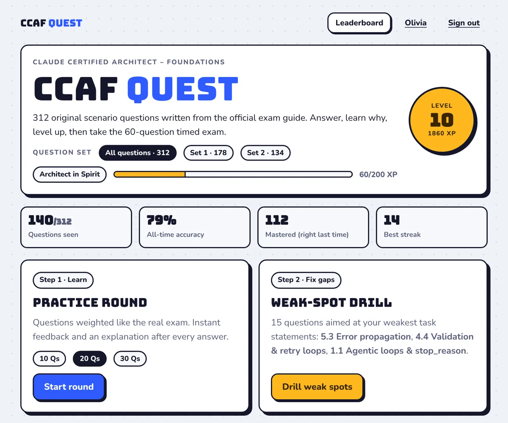
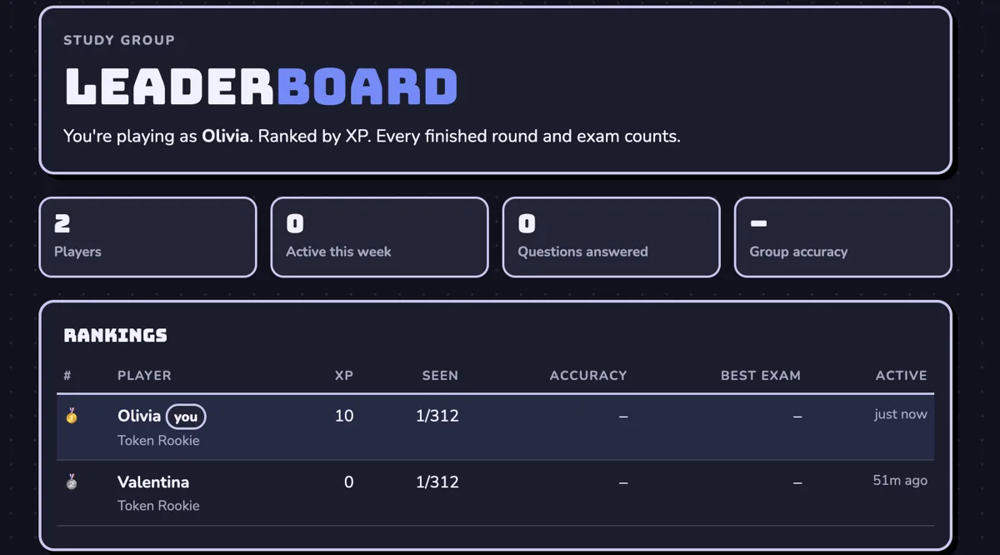

Study, level up, compare.
Scenario questions written from the official exam guide, instant explanations, a weak-spot drill that targets what you keep missing, and a timed exam simulator. Friends sign in, keep their progress, and climb a shared leaderboard.
312original questions
5exam domains
60Q timed exam
product designauth & datarow-level securitygamification


YOU SEE
Static web appOne fast page, hosted on Vercel. No server of my own to babysit.
↓ sign in, save a round
ACCOUNTS
Supabase AuthEmail and password sign-in, password reset.
↓ results stored per person
DATA
Postgres + row-level securityThe database itself checks that you only read and write your own progress.
↓ explain this question
AI TUTOR
"Ask Claude about this"Opens Claude with the question's context, on the learner's own account. No API bill.
Static front end, managed back endFree to host and nothing to patch. The trade-off is less control over things like email delivery.
Security in the database, not the pageRules live next to the data, so a clever user in the browser still can't read someone else's results.
Only original questionsEvery question is written fresh from the official task statements, nothing copied. Trust is part of the product.
Everyone shows up on the boardNew sign-ups appear right away with 0 XP, so friends feel included from day one.